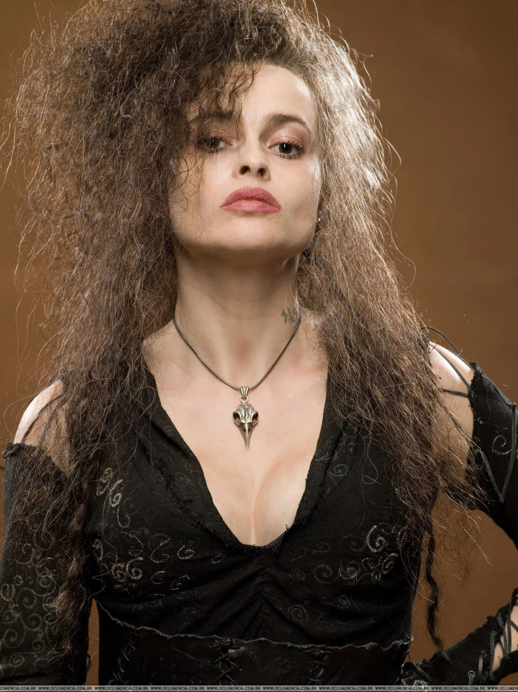
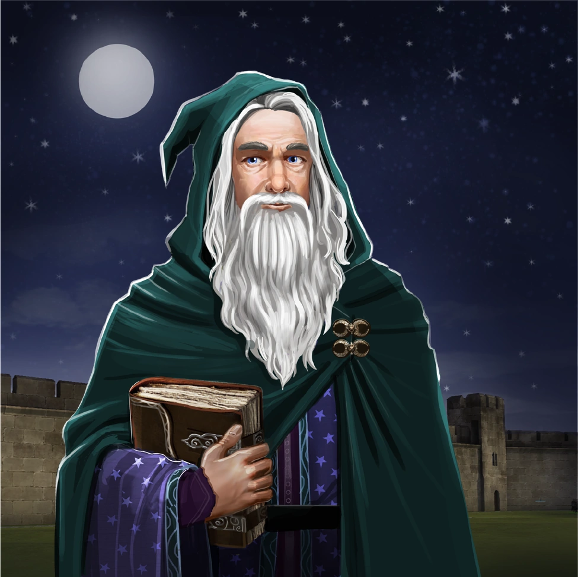

Lema da Casa
Em Sonserina, existem apenas aqueles de mente verdadeiramente astuta. Dignidade, astúcia e determinação em um lugar de auto-seleção.
Descrição da Casa
A Sonserina é conhecida por sua astúcia, ambição e determinação. Os membros desta casa valorizam a inteligência, a autoconfiança e a determinação para atingir seus objetivos. Na Sonserina, você encontrará um ambiente desafiador e estimulante, onde a ambição é celebrada e a inteligência é valorizada.
Informações Extras
Os sonserinos da Casa Sonserina são conhecidos por sua habilidade em encontrar soluções criativas e por sua ambição inabalável. Eles são estrategistas natos, sempre prontos para usar sua astúcia para alcançar seus objetivos. Além disso, a Casa Sonserina tem uma forte tradição de produzir bruxos e bruxas habilidosos em poções, ocultismo e magia das trevas.
Fundador: Salazar Slytherin (Sonserina)
Salazar Slytherin, o fundador da Casa Sonserina, era conhecido por sua astúcia lendária e sua habilidade em falar Parseltongue, a língua das serpentes. Ele acreditava que a ambição e a inteligência eram as maiores virtudes de um bruxo, e essas crenças fundamentaram a Casa Sonserina. Slytherin valorizava a pureza do sangue e selecionava seus alunos com base em sua linhagem mágica. Seu lema era "Astúcia e ambição acima de tudo", e ele valorizava a autoconfiança e a determinação acima de tudo.
Personagens Relevantes da Casa Sonserina
-
Severus Snape
Um bruxo habilidoso e mestre de poções, conhecido por sua astúcia e lealdade à Sonserina.
-
Draco Malfoy
Um estudante influente e ambicioso de Hogwarts, conhecido por sua determinação em alcançar seus objetivos.
-

Bellatrix Lestrange
Uma bruxa poderosa e leal aos ideais da Sonserina, conhecida por sua coragem e fidelidade.
-

Merlin
Um bruxo lendário e poderoso, considerado um dos maiores bruxos de todos os tempos, conhecido por sua inteligência e habilidade em magia.